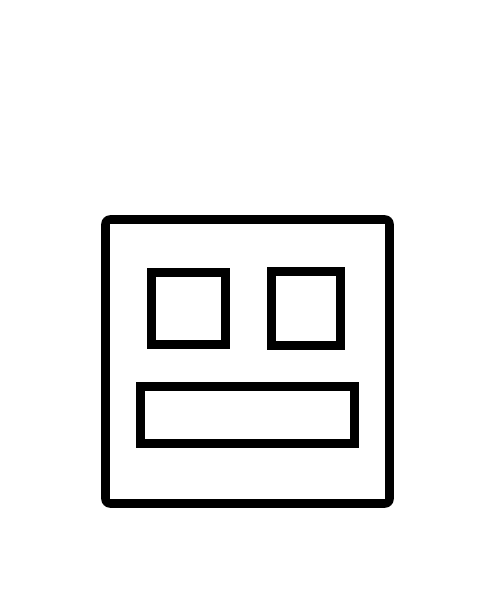
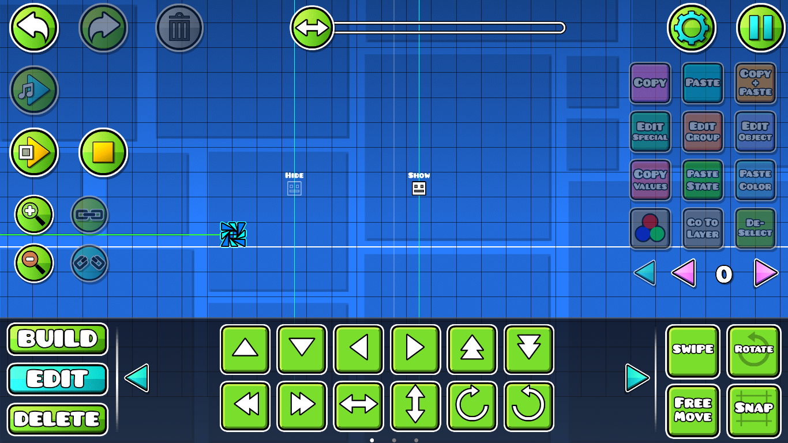
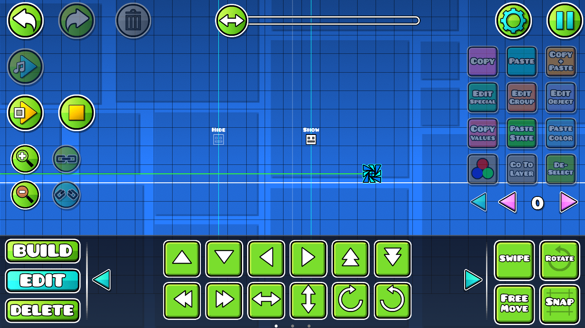
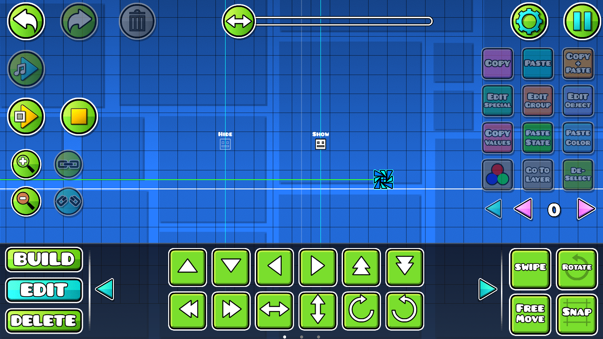
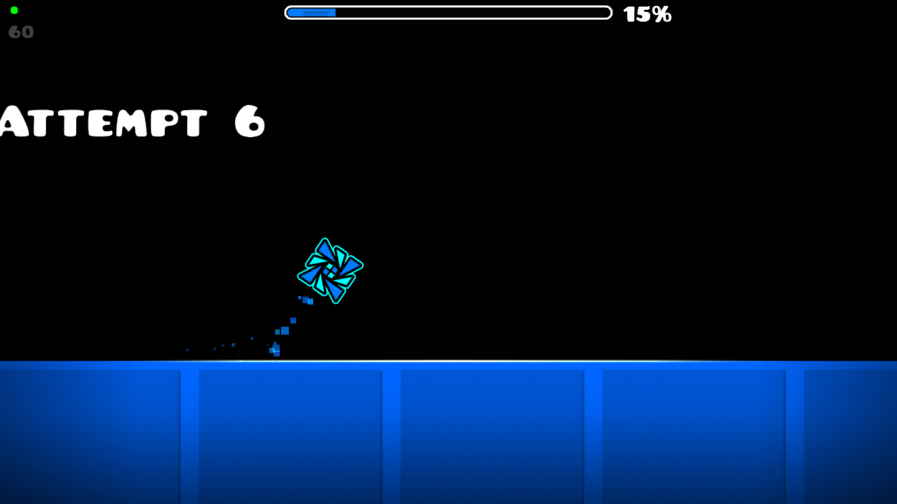

Show: Este trigger hace que el icono del jugador sea visible, (normalmente se usa para quitar el efecto de otro trigger llamado "Hide"). Hide: Este trigger oculta a la vista el icono del jugador hasta que un trigger "Show" lo haga visible.

 

Enable: Este trigger activa el rastro del icono del jugador, dejando una estela con frames repetidos de el icono con baja opacidad.
Disable: Desactiva el rastro del jugador, (normlamente previamente activado por el trigger "Enable").


Nota: Pasa el mouse por encima para ver el efecto desactivado y luego activado.
Tutorial recomendado: